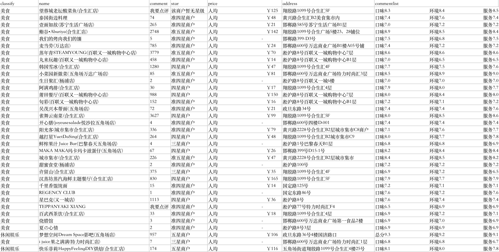
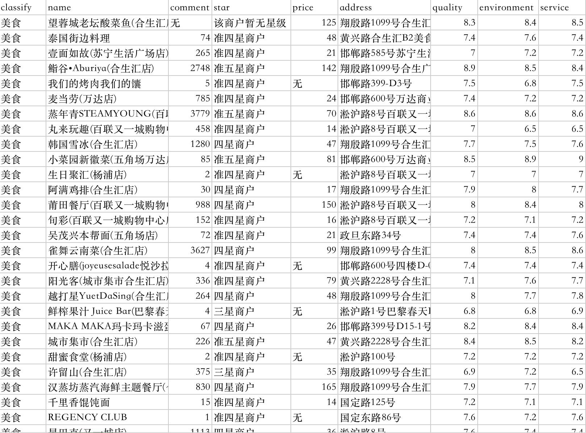

商铺数据

要求:
- 成功读取“商铺数据.csv”文件
- 解析数据，存为list
数据清洗：
- comment，price两个字段清洗成数字
- 清除字段缺失的数据
- commentlist拆分成三个字段，并且清洗成数字
结果存为.csv文件
# 1.导入数据
f=open('商铺数据.csv','r',encoding='utf-8')
#查看前6行数据函数
def data(x):
if x==all:
for line in f.readlines()[:6] :#查看前5行数据
print(line.split(','))# 按,拆分
else:
for line in f.readlines()[:6] :
print(line.split(',')[x])
f.seek(0,0)
data(all)
['\ufeffclassify', 'name', 'comment', 'star', 'price', 'address', 'commentlist\n']
['美食', '望蓉城老坛酸菜鱼(合生汇店)', '我要点评', '该商户暂无星级', '人均 ￥125', '翔殷路1099号合生汇5F', '口味8.3 环境8.4 服务8.5\n']
['美食', '泰国街边料理', '74 条点评', '准四星商户', '人均 ￥48', '黄兴路合生汇B2美食集市内', '口味7.4 环境7.6 服务7.4\n']
['美食', '壹面如故(苏宁生活广场店)', '265 条点评', '准四星商户', '人均 ￥21', '邯郸路585号苏宁生活广场B1层', '口味7.0 环境7.2 服务7.2\n']
['美食', '鮨谷•Aburiya(合生汇店)', '2748 条点评', '准五星商户', '人均 ￥142', '翔殷路1099号合生广场5楼23、28铺位', '口味8.9 环境8.5 服务8.4\n']
['美食', '我们的烤肉我们的馕', '5 条点评', '准四星商户', '人均 -', '邯郸路399-D3号', '口味7.5 环境6.8 服务7.5\n']
清洗数据
商铺数据.csv
清洗评论数量数据
f.seek(0,0)
print('---原始数据预览---')
data(2)#查看评论数据
#定义清洗数据函数
import re
def comment_number(s):
if '我要点评' in s:
return '无数据'
else:
return re.findall(r'\d+',s)
print('---清洗完数据预览---')
for line in f.readlines()[:6] :
cm_n=comment_number(line.split(',')[2])
print(cm_n)
---原始数据预览---
comment
我要点评
74 条点评
265 条点评
2748 条点评
5 条点评
---清洗完数据预览---
[]
无数据
['74']
['265']
['2748']
['5']
清洗价格数据
f.seek(0,0)
print('---原始数据预览---')
data(4)
def pri(s):
if '-' in s:
return '无数据'
else:
return re.findall(r'\d+',s)
print('---清洗完数据预览---')
for line in f.readlines()[:6] :
pr=pri(line.split(',')[4])
print(pr)
---原始数据预览---
price
人均 ￥125
人均 ￥48
人均 ￥21
人均 ￥142
人均 -
---清洗完数据预览---
[]
['125']
['48']
['21']
['142']
无数据
清洗评论数据
f.seek(0,0)
print('---原始数据预览---')
data(-1)
def comment(s):
if len(s)<3:
return '无数据'
else:
return re.findall(r'\d+\.\d',s)#提取小数
print('---清洗完数据预览---')
for line in f.readlines()[:6] :
cm=comment(line.split(',')[-1])
print(cm)
---原始数据预览---
commentlist
口味8.3 环境8.4 服务8.5
口味7.4 环境7.6 服务7.4
口味7.0 环境7.2 服务7.2
口味8.9 环境8.5 服务8.4
口味7.5 环境6.8 服务7.5
---清洗完数据预览---
[]
['8.3', '8.4', '8.5']
['7.4', '7.6', '7.4']
['7.0', '7.2', '7.2']
['8.9', '8.5', '8.4']
['7.5', '6.8', '7.5']
汇总数据
#数据清洗
import csv
csvfile=open('清洗完数据.csv','w')
writer = csv.writer(csvfile)
writer.writerow(['classify','name','comment','star','price','address','quality','environment','service'])
f.seek(0,0)
for line in f.readlines()[1:10] :#删除第一个数据
s=line.split(',')
classify=s[0]
name=s[1]
comment_1=comment_number(s[2])[0]#获取列表下数字
star=s[3]
price=pri(s[4])[0]
address=s[5]
quality=comment(s[-1])[0]
environment=comment(s[-1])[1]
service=comment(s[-1])[2]
#预览查看
print(classify,name,comment_1,star,price,address,quality,environment,service)
#删除缺失数据
if '无数据'not in [classify,name,comment_1,star,price,address,quality,environment,service]:
writer.writerow([classify,name,comment_1,star,price,address,quality,environment,service])
csvfile.close()
f.close()
美食 望蓉城老坛酸菜鱼(合生汇店) 无 该商户暂无星级 125 翔殷路1099号合生汇5F 8.3 8.4 8.5
美食 泰国街边料理 74 准四星商户 48 黄兴路合生汇B2美食集市内 7.4 7.6 7.4
美食 壹面如故(苏宁生活广场店) 265 准四星商户 21 邯郸路585号苏宁生活广场B1层 7.0 7.2 7.2
美食 鮨谷•Aburiya(合生汇店) 2748 准五星商户 142 翔殷路1099号合生广场5楼23、28铺位 8.9 8.5 8.4
美食 我们的烤肉我们的馕 5 准四星商户 无 邯郸路399-D3号 7.5 6.8 7.5
美食 麦当劳(万达店) 785 准四星商户 24 邯郸路600号万达商业广场B1楼A05号铺 7.4 7.2 7.2
美食 蒸年青STEAMYOUNG(百联又一城购物中心店) 3779 准五星商户 70 淞沪路8号百联又一城购物中心7层 8.6 8.6 8.6
美食 丸来玩趣(百联又一城购物中心店) 458 准四星商户 14 淞沪路8号百联又一城购物中心B1层 7.0 6.5 6.5
美食 韩国雪冰(合生汇店) 1280 四星商户 47 翔殷路1099号合生汇4F 7.7 7.5 7.6
代码汇总
# 1.导入数据
f=open('商铺数据.csv','r',encoding='utf-8')
#2. 定义函数
import re
def comment_number(s):
if '我要点评' in s:
return '无数据'
else:
return re.findall(r'\d+',s)
def pri(s):
if '-' in s:
return '无数据'
else:
return re.findall(r'\d+',s)
def comment(s):
if len(s)<3:
return '无数据'
else:
return re.findall(r'\d+\.\d',s)#提取小数
# 3.计算清洗数据&导出csv
import csv
csvfile=open('清洗完数据.csv','w')
writer = csv.writer(csvfile)
writer.writerow(['classify','name','comment','star','price','address','quality','environment','service'])
f.seek(0,0)
n=0 #计数变量
for line in f.readlines()[1:] :#删除第一个数据
s=line.split(',')
classify=s[0]
name=s[1]
comment_1=comment_number(s[2])[0]#获取列表下数字
star=s[3]
price=pri(s[4])[0]
address=s[5]
quality=comment(s[-1])[0]
environment=comment(s[-1])[1]
service=comment(s[-1])[2]
#删除缺失数据
if '无数据'not in [classify,name,comment_1,star,price,address,quality,environment,service]:
n+=1
writer.writerow([classify,name,comment_1,star,price,address,quality,environment,service])
print('导出成功，合计'+str(n)+'条数据')
csvfile.close()
f.close()
导出成功，合计1265条数据

清洗完数据